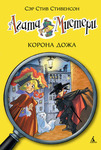

Агата Мистери Корона дожа

Наделённая потрясающим чутьём и феноменальной памятью, Агата Мистери мечтает стать писательницей. Но это в будущем, а пока она просто превосходная сыщица! Вместе со своим незадачливым братом Ларри, студентом детективной школы, она путешествует по миру, чтобы решать самые запутанные загадки. А помогают им преданный дворецкий, вредный сибирский кот и множество чудаковатых родственников.
Агата Мистери Корона дожа
В самый разгар знаменитого карнавала кто-то похитил старинную золотую корону, одну из тех, что правители Венеции — дожи — носили во времена расцвета Венецианской республики. Агате и Ларри Мистери предстоит распутать эту непростую загадку и при этом попытаться не отвлекаться на великолепную архитектуру и пёстрый вихрь карнавальных костюмов и масок. Сыщиков ждут не только тайны обедневших аристократов, но и погоня на гондоле по знаменитым каналам города на воде!